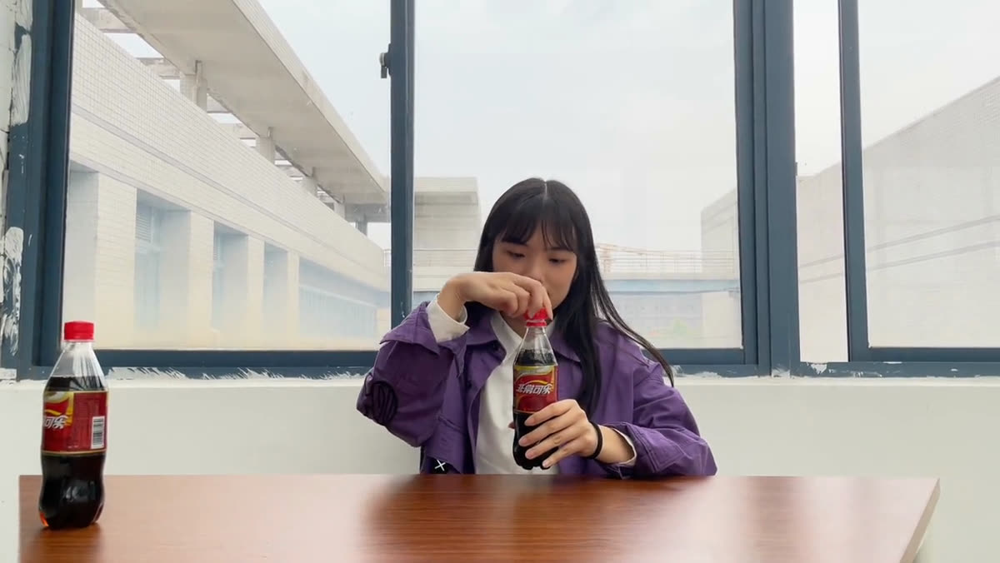
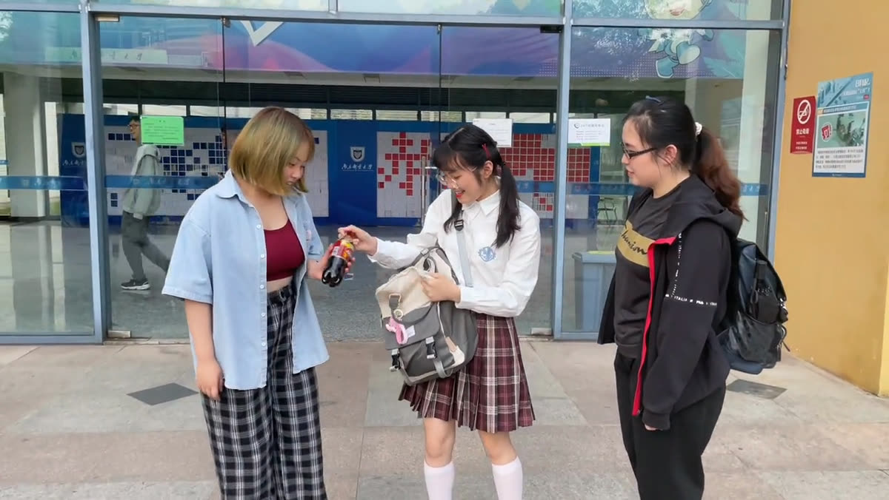
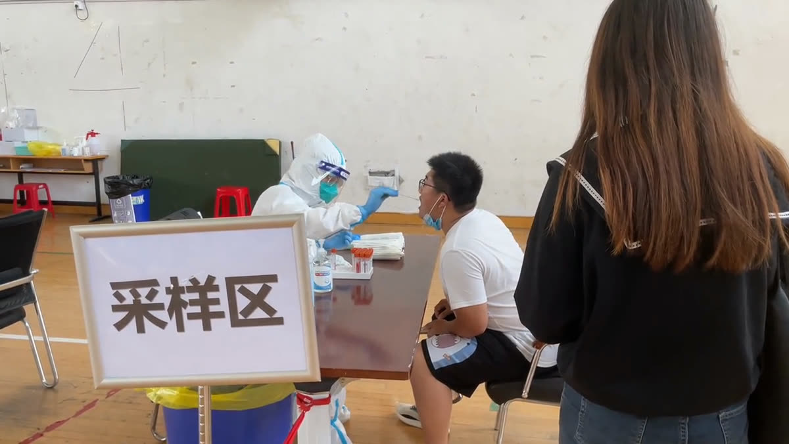
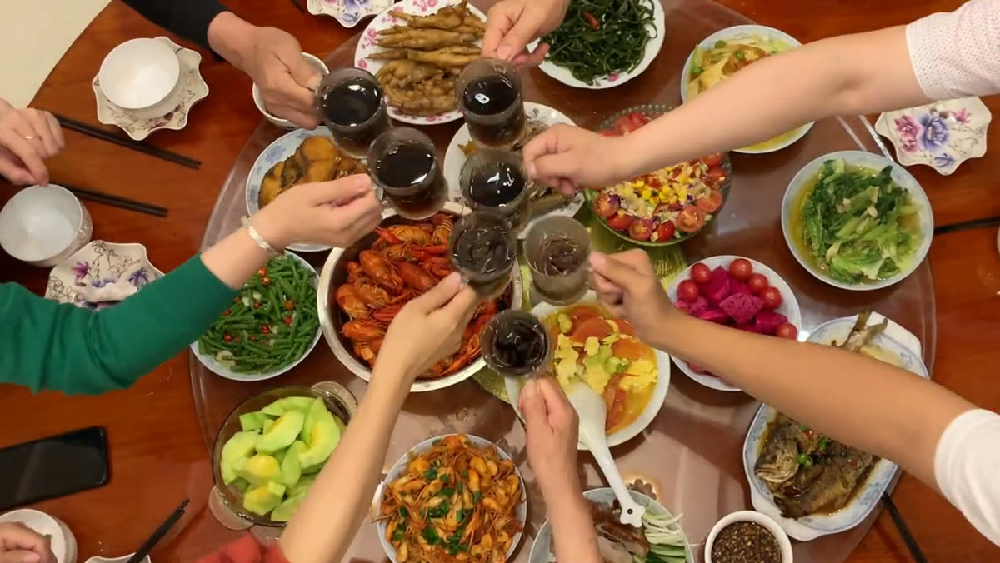

广告 · 01
娃哈哈非常可乐《非常时刻》
“非常时刻，非常可乐。”一瓶可乐串起女孩生命里的三个节点—— 童年的告别、高考后的庆祝、防疫志愿时的那口凉。结尾让三个时空的她同框举杯。
- 年份
- 2022
- 类型
- 品牌广告片
- 时长
- 2′37″
- 镜头
- 30 个
- 软件
- Premiere Pro
完整成片 · 2 分 37 秒（1080p）
创意与叙事结构Concept
非常可乐是一个带着年代感的品牌，它的情感资产不在“新”，而在“陪伴”。 所以我们没有做产品功能广告，而是选择了一条时间线上的三次出现。
第一次是童年：父母外出打工，女孩一边哭一边追，妈妈临行前留下几瓶可乐， 说要学会分享。第二次是高考后：她在自动售货机买了可乐，和朋友一起庆祝。 第三次是成为防疫志愿者后：脱下防护服、擦掉汗珠时，有人递来一瓶。
结尾是全片的技术核心——用碰杯点剪辑把三个时空缝在一起： 童年的她举杯时，高考后的她与志愿时的她分别从左右移入，三人同框碰杯， 落到“非常时刻，非常可乐”。
设计要点
- 三条时间线共用一个道具：可乐既是线索也是转场依据
- 解说词只在关键节点出现：其余段落交给画面与环境音
- 动作对位：三个时空的“拧瓶盖—举杯—碰杯”动作保持一致，才能无缝对切
- 景别递进：每段都从全景交代环境走到特写落情绪
- 音效分层：环境音打底，行李箱拖动声、按钮声、碰杯声作为记忆锚点
关键画面
四个节点串起一瓶可乐的三次出现与结尾的同框碰杯




分镜头稿本Storyboard
以下为拍摄前撰写的完整分镜头稿本（共 30 个镜头）。 景别缩写：全＝全景、远＝远景、中＝中景、近＝近景、特＝特写； 技巧缩写：固＝固定、跟＝跟镜头、推＝推镜头、拉＝拉镜头、移＝移镜头、摇＝摇镜头。
← 表格可左右滑动查看完整内容 →
| 镜号 | 景别 | 技巧 | 时间 | 画面 | 解说 | 音响 / 音乐 | 备注 |
|---|---|---|---|---|---|---|---|
| 1 | 近 | 固 | 5s | 小时候，女孩正脸，低头 | 环境音 | ||
| 2 | 近 | 固 | 7s | 父母吵架，墙上剪影一男一女 | 争执声、哭声 | ||
| 3 | 远 | 跟、摇 | 16s | 追逐父母离去，父母拉着行李箱，女孩不小心摔倒，镜头下落 | 小时候，爸爸妈妈外出打工，我一边哭一边追，却不小心跌倒了，只能看着他们越走越远。 | 哭声、行李箱拖动声、脚步声 | |
| 4 | 近 | 移 | 5s | 女孩抬起头，望向可乐 | 还记得妈妈出门前给我留了几瓶可乐 | 轻音乐 | |
| 5 | 特 | 固 | 3s | 女孩伸手去拿可乐 | 跟我说要乐于助人，学会分享。 | ||
| 6 | 近→中 | 拉 | 6s | 从镜 5 的手切到该镜女孩手，拉到全身，高考后的女孩站立 | 时空转换点 | ||
| 7 | 中 | 跟 | 6s | 女孩向前走到自动售货机前，按下按钮 | 环境音、按钮声 | ||
| 8 | 近 | 固 | 4s | 女孩从出货口拿出可乐 | 高考结束后，我买了几瓶可乐和朋友一起分享。 | 环境音 | |
| 9 | 中 | 固 | 4s | 女孩将可乐放进书包 | 环境音 | ||
| 10 | 远 | 固 | 5s | 女孩和好朋友一起有说有笑地走出大厅 | 轻音乐 | ||
| 11 | 中 | 推 | 12s | 女孩从包里拿出可乐分给好朋友，自己也拿出一瓶 | |||
| 12 | 全 | 固 | 2s | 画面切换，做核酸排队场景 | 后来，我成为了一名防疫志愿者。 | 环境音 | |
| 13 | 全 | 固 | 6s | 女孩穿着防护服给学生做核酸咽拭子 | 环境音 | ||
| 14 | 远 | 固 | 4s | 室外，仰视角度，树叶飘动 | 环境音 | 空镜转场 | |
| 15 | 全 | 固 | 8s | 女孩边走边解开防护服，拂拭额头上的汗珠 | 环境音 | ||
| 16 | 中 | 固 | 4s | 一个人拿着一瓶可乐走过来 | 环境音 | ||
| 17 | 特 | 固 | 2s | 一只手递出可乐 | 轻音乐 | ||
| 18 | 特 | 固 | 2s | 女孩双手接过可乐 | |||
| 19 | 中→近 | 推 | 17s | 小时候的女孩坐在桌前，伸手去拿可乐，拧开瓶盖，喝下一口，分别向左右看一眼，对着镜头举杯 | 这些时刻，都有非常可乐。 | 剪辑时注意：镜 19 女孩拿起可乐喝时，将镜 20、镜 21 的画面分别从左侧和右侧移入；镜 19 女孩左右看时，再次出现镜 20、镜 21 进行碰杯点剪辑。 | |
| 20 | 近 | 固 | 7s | 防疫志愿时的女孩拧开瓶盖，拿起可乐喝下一口，并做碰杯状 | |||
| 21 | 近 | 固 | 7s | 高考结束后的女孩拧开瓶盖，拿起可乐喝下一口，并做碰杯状 | |||
| 22 | 特 | 固 | 1s | 画面切换，三个不同角度的碰杯情景 | 碰杯声 | ||
| 23 | 特 | 固 | 1s | 同上，第二角度 | |||
| 24 | 特 | 固 | 1s | 同上，第三角度 | |||
| 25 | 近 | 固 | 2s | 两个不同角度的拧瓶盖情景 | 拧瓶盖声 | ||
| 26 | 特 | 固 | 3s | 同上，第二角度 | |||
| 27 | 近→特 | 推 | 9s | 女孩拿起可乐向杯子里倒，特写到杯中液体上升 | 倒水声、气泡声 | ||
| 28 | 全 | 固 | 3s | 上方俯拍视角，全家碰杯情景 | 碰杯声 | ||
| 29 | 中→特 | 摇、推 | 7s | 从饭桌摇到一旁的非常可乐，推近特写，出现娃哈哈非常可乐的 logo | 非常时刻，非常可乐。 | 读“娃哈哈”标语声 | |
| 30 | — | — | 6s | 片尾，介绍制作人等 |
分镜头稿本原文见文末《非常时刻》课设稿本；轻音乐素材来源为包图网。
制作过程Process
确定情感锚点
先找“可乐会出现在什么时刻”。我们列了十几个生活场景， 最后筛出三个共性最强、又能构成成长弧线的：离别、庆祝、被照顾。
撰写分镜头稿本
按镜号逐条写明景别、技巧、时长、画面、解说、音响与备注。 尤其在镜 19—21 处提前写好剪辑指令， 因为这三个镜头必须在拍摄阶段就把动作和视线方向对齐，后期才拼得上。
分场景拍摄
三条时间线分别在不同场地拍摄：室内桌前、教学楼与自动售货机、 核酸采样点与室外。同一动作在多个角度各拍一遍，为后期留出选择空间。
剪辑与点剪辑处理
在 Premiere Pro 中按稿本顺序粗剪，再依背景音乐节奏二次调整。 结尾的三人同框用位置关键帧让镜 20、21 从左右移入， 碰杯瞬间做点剪辑，让三个时空在同一帧完成对撞。
调色与音效
不同场地的色温差异明显，统一在 Lumetri 里调整亮度、对比度、 饱和度与色温，让三段在视觉上属于同一部片子。 环境音、行李箱拖动声、按钮声与碰杯声分层铺设，用关键帧控制音量增益。
字幕与收尾
解说词以字幕形式呈现，收尾落到品牌 logo 与标语 “非常时刻，非常可乐”，最后接片尾制作人名单。